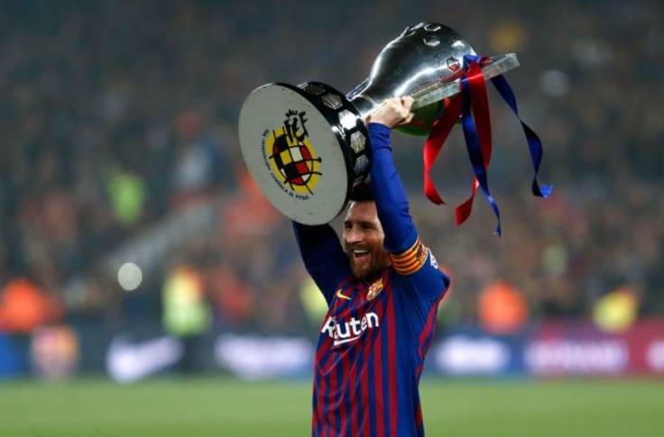

Barcelona
- 2003–05: Rise to the first team
- 2005–08: Becoming a starting eleven player
- 2008–09: First treble
- 2009–10: First Ballon d'Or
- 2010–11: Fifth La Liga title and third Champions League
- 2012: A record-breaking year
- 2013–14: Messidependencia
- 2014–15: Second treble
- 2015–16: Domestic success
- 2016–17: Fourth Golden Boot
- 2017–18: Domestic double and a record fifth Golden Boot
- 2018–19: Barcelona captain, tenth La Liga title, and a record sixth Golden Boot
- 2019–20: A record sixth Ballon d'Or
- August 2020: Desire to leave Barcelona
- 2020–21: Most goals scored for a club and most appearances for Barcelona
International career
- 2004–05: Success at youth level
- 2005–06: Senior and World Cup debuts
- 2007–08: Copa América final and Olympic gold
- 2008–11: Collective decline
- 2011–13: Assuming the captaincy
- 2014–15: World Cup and Copa América finals
- 2016–17: Third Copa América final, retirement, and return
Return
- 2018: World Cup
- 2019–present: Copa América third-place